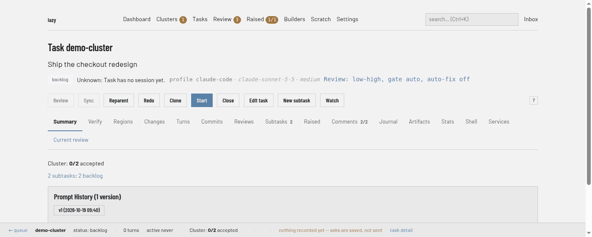
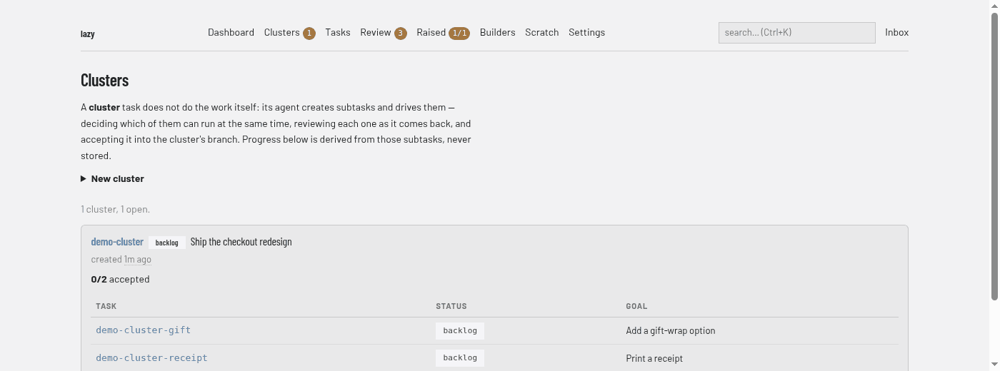

Cluster tasks
A cluster task is a task whose agent drives other tasks instead of writing code itself. You give it a set of subtasks; its agent — the driver — decides which of them can run at the same time, starts them, reviews each one as it comes back, sends it back with feedback or accepts it, and hands back when there is nothing left it can usefully run.
It is the shape you want when you have a pile of related work that should land in one branch and be reviewed as one change: everything a review turned up, every follow-up from a release, every item on a checklist.
For how a cluster fits into review and accept, see Review and accept.
Creating one
lazy create --type cluster --goal "Fix everything the API review found"
The type is available everywhere a type is: the type dropdown on the dashboard's
create form, lazy create --type cluster, lazy edit <task> --type cluster,
and the type field of the lazy_create MCP tool.
Give the cluster a prompt that says what the children are for. You can list the work in the prompt and let the cluster create the subtasks itself, or create the subtasks up front and let it find them.
Adding existing backlog tasks to a cluster is a reparent:
lazy reparent <task> --parent <cluster>
You can do this before the cluster starts. A started task reparented under a cluster that has not started yet has nothing to merge yet; lazy says so, and merges the cluster's branch into it as soon as the cluster starts.
What the driver does
Every turn a cluster takes, it runs under a contract lazy injects for you:
- Read the tree (
lazy list <cluster>) to see what its children are and what state each one is in. The tree is the source of truth, not its memory of it — children can be added and removed while it works. - Decide what can run now, and start all of it. The driver weighs whether two children touch the same files, whether one needs another's work first, and what each accept will cost the children still running, then starts everything that is safe to run at once. Nothing in lazy caps how many that is.
- Wait on all of the running children together and act on whichever finishes first.
- Read what that child came back with — its report and its raised items, not its diff. By default a child has already reviewed its own work inside its own session before it parked (the review paradigm), so the work that reaches the driver has been read once and fixed once.- Accept it, unless something serious is recorded. Accept is the default. "Serious" means a security or data-integrity problem, a capability lost, a stated goal not met, or a finding at critical or high severity — not a nit, and not polish. The driver writes the child's verdict in its journal first, so you can read afterwards how many rounds each child took and what went wrong. An accepted child's work merges into the cluster's branch, so the whole cluster lands as one change.
- The driver sets review settings ONCE on itself and every child follows: a child that says nothing inherits its parent task's mode, gate and auto-fix (the review paradigm). A child that overrides one keeps inheriting the rest.
- The driver may escalate one child to a separate review when the stakes
justify a cold second read — a security or data-integrity change, a migration,
something it cannot judge from the report. It sets that child's review mode to
separate, and then that child gets a reviewer of its own whose verdict gates the accept. It is per child, not how a cluster runs by default. A child whose separate review stalls — a decision only a person can make, findings the driver must weigh, the round cap, or a review that failed or never ran — is handed back to the driver with the findings, not parked on you. Whatever it decides, you see the outcome at the cluster's own review. - Repeat until nothing is left to run.
How many children run at once
That is the driver's call. There is no cap, no queue and no setting.
How many rounds one child may have
[cluster] max_child_fix_rounds (default 3) bounds it: after that many rounds
on the same child, lazy refuses the driver's next send-back and tells it to
accept the child, close it, or set it aside with a question for you.
The count is per child, so one stubborn child never eats another's budget, and children running at the same time never interfere with each other's.
The bound is on the driver's own judgement, never on yours. Unblocking that
child yourself is never refused, and it starts a fresh budget — as does
starting the child again, accepting it, or reopening it. Set the key to 0 to
remove the bound entirely.
This key is one of the levers in the review paradigm, which explains what each one costs you when you turn it down.
Protected files are decided once, at the cluster
A child that changes files your project protects ([permissions] protected in
lazy.toml) — test suites, typically — is not held for your
approval. Its accept goes through with no file decisions, and every protected
change is carried up to the cluster: the cluster's own accept lists all of them,
and you approve or reject them there, together with the rest of the work. The
driver is told never to park a child, or ask you anything, on that account.
This holds for every child of a cluster, including one you started or sent feedback to yourself.
Children run your end-of-work rules
Every child finishes the way any task does. Its final turn runs the rules you
configured — maintained files ([[automation.maintain]]), reactive automations
([[automation.react]]), the check for uncommitted work, and the review
walkthrough — exactly as it would for a task you started yourself. Only the
protected-file decision moves: the child still records why it kept each
protected change, and you decide on all of them once, at the cluster's accept.
It keeps its own branch current
A cluster can sync itself: it merges its own branch on origin, then its parent, into its branch. Children started after the sync branch from the cluster's current state. The driver is told to sync before starting a new wave rather than after every accept.
The sync merges everything outstanding and stops at the first conflict, which the driver resolves itself before carrying on — so a conflict costs one cycle, not the cluster. A cluster is the only thing that can sync a running task, and it can only do it to itself: see surface asymmetries.
Children it cannot finish
Some tasks turn out to be impossible as written, or far bigger than the prompt
suggests. A driver is expected to recognise those, set them aside, and carry on
with the rest rather than grinding to a halt on the first hard one. A child it
sets aside is tagged deferred-by-<cluster>, so you can find them all:
lazy search 'tag:deferred-by-my-cluster'
When the cluster stops, it raises one blocking item per deferred child saying what it needs from you. Blocking means accepting the cluster is refused until you have answered them, so a cluster can never quietly hand back a pile of work it never did.
Which agent the children run on
A child created without an agent runs on the driver's own agent profile, and so on that profile's model. [agent.by_type] in lazy.toml is not consulted for children, so a cluster on an expensive profile keeps every child there. To run a child on a cheaper profile, create it with an explicit agent (--agent <profile>, or the agent argument over MCP); the driver can do this itself, choosing from the profiles the project offers. Children also do not inherit the driver's task type: with no type given they are plain tasks.
In Lazy Teams, a project admin can set the child review budget under Settings → Configuration:
[cluster]
max_child_fix_rounds = 3
After three review send-backs for one child, Lazy asks the cluster to decide what to do with that child. Other children keep their own budgets.
Watching it
On the dashboard, the progress line (Cluster: 0/2 accepted) is at the top of the cluster's own page, with each child linked:

The dashboard's Clusters page lists every cluster with its progress and a table of its children, their statuses and goals:

On the command line, lazy show <cluster> prints the cluster's progress: how many children have been
accepted out of how many are still expected to land, which are running, which
are deferred, and how many were closed.
lazy show <cluster> --json carries the same numbers, under cluster_progress.
For a task that is not a cluster the key is absent.
In Lazy Teams the same line is on the cluster's own page, and the project nav has a page listing every cluster with its progress and its children — including which ones were set aside — so you can see what all of them are doing without opening each one.
All of it is derived from the tree, so it is correct whether the driver accepted a child or you did.
Stopping and resuming
A cluster that has stopped is blocked, like any other task, and you resume it
the usual way:
lazy unblock <cluster>
With one exception: if you add a child to a cluster that is parked after its own turn, lazy starts it again by itself, telling it which child arrived. This applies to cluster tasks only.
Three things to know about it:
- A cluster you stopped with
lazy stopstays stopped, until it next completes a turn — see below. Adding a child does not start it again: the arrival is written onto the cluster as a note instead, which it reads when you unblock it. (lazy resumedeliberately carries no new context, so it does not hand over that note. The cluster re-reads its subtask tree either way, which is where the new child actually is, butlazy unblockis what puts the note in front of it.) - Children the driver's own agent created never wake it. Otherwise a cluster that spawns its own subtasks would wake itself forever.
- Automatic restarts come out of the same budget as every other turn lazy starts
on its own (
auto_react_max_retriesandmax_auto_turnsin lazy.toml). Once that budget is spent the cluster simply stays blocked until you unblock it, which resets the counters.
What ends a stop. Any turn the cluster completes does — not only one you
meant as a restart. Unblocking it obviously does, but so does asking it a
question with lazy ask, or running a review on it: both run the agent, and a
completed turn clears the stop. From then on the cluster is an ordinary parked
cluster again, so the next child added to it starts a turn.
If a cluster's turn is killed
A cluster can be cut off mid-turn — you upgrade lazy, the daemon restarts, the
machine reboots, the agent crashes. That is not "stopped": nothing was handed
back to you and nothing was decided. Such a cluster is marked interrupted and
lazy starts it again for you, out of the same automatic-turn budget as above. It
picks up by re-reading its tree, which is where the state of every child lives,
so a child that finished while the cluster was down is simply there when it
looks.
You do not need to unblock a cluster in that state, and you should not see it waiting for you.
Cluster tasks and the lazy loop command
They are two answers to the same question, and you pick by who is doing the
reviewing. lazy loop drives a queue of tasks with you at the keyboard: it
starts each one, waits, and presents a review gate where you choose. A cluster
task is the unattended version — its agent makes those calls itself, and you
review the whole thing once at the end.
What a cluster does not do
- It does not do its children's work. A child's changes reach the cluster's branch by being accepted, never by the driver re-implementing them.
- It does not schedule from a queue you configure — the driver decides what runs next, and how much of it, every cycle.